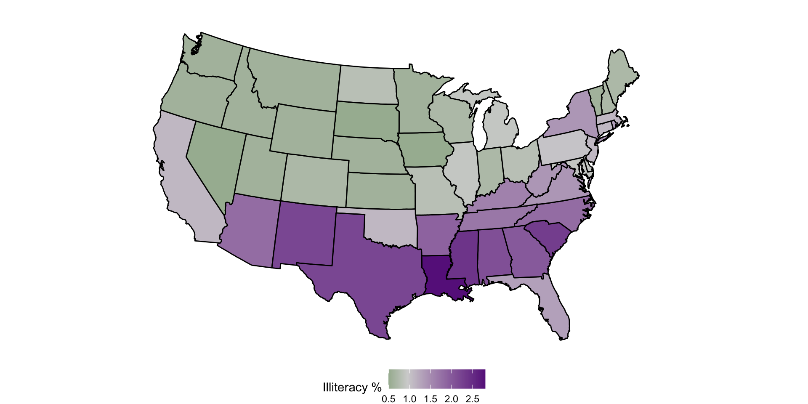
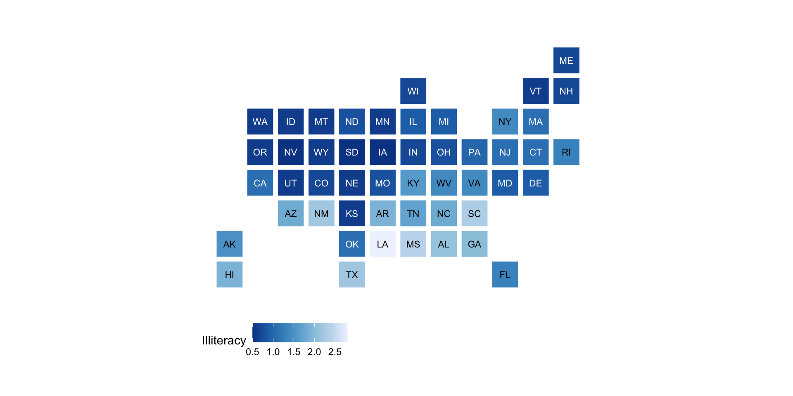
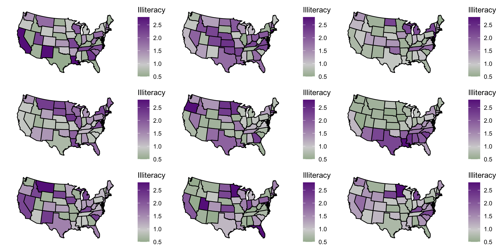
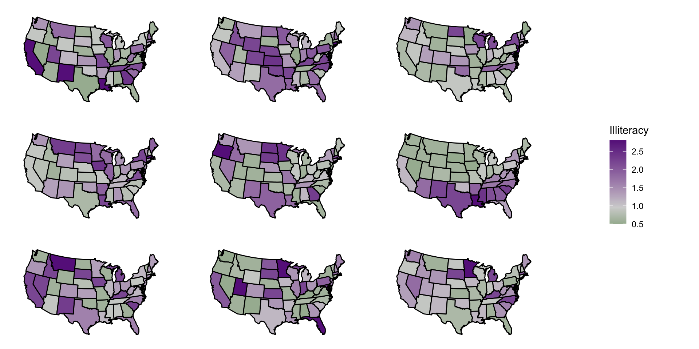

# A tibble: 3 × 9
Population Income Illiteracy `Life Exp` Murder `HS Grad` Frost Area state
<dbl> <dbl> <dbl> <dbl> <dbl> <dbl> <dbl> <dbl> <chr>
1 3615 3624 2.1 69.0 15.1 41.3 20 50708 alabama
2 365 6315 1.5 69.3 11.3 66.7 152 566432 alaska
3 2212 4530 1.8 70.6 7.8 58.1 15 113417 arizonaVisualizations and Inference for Areal Data
Prof Ron Yurko
2025-04-09
Announcements, previously, and today…
HW8 is due TONIGHT by 11:59 PM ET
You do NOT have lab this week
Last time:
Three main types of spatial data:
Point Pattern Data: lat-long coordinates where events have occurred
Point-Referenced data: Latitude-longitude (lat-long) coordinates as well as one or more variables specific to those coordinates.
Areal Data: Geographic regions with one or more variables associated with those regions.
Walked through how to plot point-referenced and point pattern data.
TODAY: Visualizations and Inference for Areal Data
Thinking about areal data
Areal Data: Geographic regions associated with one or more variables specific to those regions
Areal data will have the following form (example US states data from 1970s):
High-level overview of steps
Need to match the region with the actual geographic boundaries
Many geographic boundaries/features are stored as “shapefiles”
- i.e., complicated polygons
Can contain the lines, points, etc. to represent any geographic feature
Shapefiles are readily available for countries, states, counties, etc.
Access shapefiles using map_data()
long lat group order region subregion
1 -87.46201 30.38968 1 1 alabama <NA>
2 -87.48493 30.37249 1 2 alabama <NA>
3 -87.52503 30.37249 1 3 alabama <NA>
4 -87.53076 30.33239 1 4 alabama <NA>
5 -87.57087 30.32665 1 5 alabama <NA>
6 -87.58806 30.32665 1 6 alabama <NA>For example:
map_data("world"),map_data("state"),map_data("county")(need to installmapspackage)Contains lat/lon coordinates to draw geographic boundaries
Typica workflow for plotting areal data
Get state-specific data
Get state boundaries
Merge state-specific data with state boundaries (using
left_join())
state_plot_data <- state_borders |>
left_join(state_data, by = c("region" = "state"))
head(state_plot_data) long lat group order region subregion Population Income Illiteracy
1 -87.46201 30.38968 1 1 alabama <NA> 3615 3624 2.1
2 -87.48493 30.37249 1 2 alabama <NA> 3615 3624 2.1
3 -87.52503 30.37249 1 3 alabama <NA> 3615 3624 2.1
4 -87.53076 30.33239 1 4 alabama <NA> 3615 3624 2.1
5 -87.57087 30.32665 1 5 alabama <NA> 3615 3624 2.1
6 -87.58806 30.32665 1 6 alabama <NA> 3615 3624 2.1
Life Exp Murder HS Grad Frost Area
1 69.05 15.1 41.3 20 50708
2 69.05 15.1 41.3 20 50708
3 69.05 15.1 41.3 20 50708
4 69.05 15.1 41.3 20 50708
5 69.05 15.1 41.3 20 50708
6 69.05 15.1 41.3 20 50708- Plot the data
Create a choropleth map with geom_polygon()
state_plot_data |>
ggplot() +
geom_polygon(aes(x = long, y = lat, group = group, fill = Illiteracy),
color = "black") +
scale_fill_gradient2(low = "darkgreen", mid = "lightgrey",
high = "darkorchid4", midpoint = 0.95) +
theme_void() +
coord_map("polyconic") +
labs(fill = "Illiteracy %") +
theme(legend.position = "bottom")Create a choropleth map with geom_polygon()

Uniform size with statebins
Many choices for displaying maps…

Inference for Areal Data
For areal data, we have the following variables:
Geographic region: \(g\)
Outcome variable: \(z\)
\(g\) is categorical, so visualization/inference involves categorical data.
If \(g\) only has a few categories, can just do ANOVA and side-by-side violins (or other displays we’ve talked about).
What to do if there are many regions?
Two approaches: Dendrograms and randomization tests.
Dendrograms for Areal Data
Recall: Dendrograms allow you to see which subjects are similar and which are dissimilar in terms of one or more variables
Intuition: Allows you to see which geographic regions are similar
To create a dendrogram:
Define a distance metric in terms of the outcome.
Plot a dendrogram.
Make the leaf labels correspond to geographic regions.
Visual randomization test
Visual randomization test
Recap and next steps
Create choropleths for areal data: color regions by variable of interest
- Requires workflow to join region level data with polygon boundaries for regions
Can perform classical type categorical type inference with areal data
Use dendrograms to visualize differences between regions based on variable of interest
Can perform visual randomization test to test signficance of observed data
HW8 is due Wednesday! You do NOT have lab this week
Next time: Visualizations for text data
Recommended reading: CW Chapter 15 Visualizing geospatial data, KH Chapter 7 Draw Maps